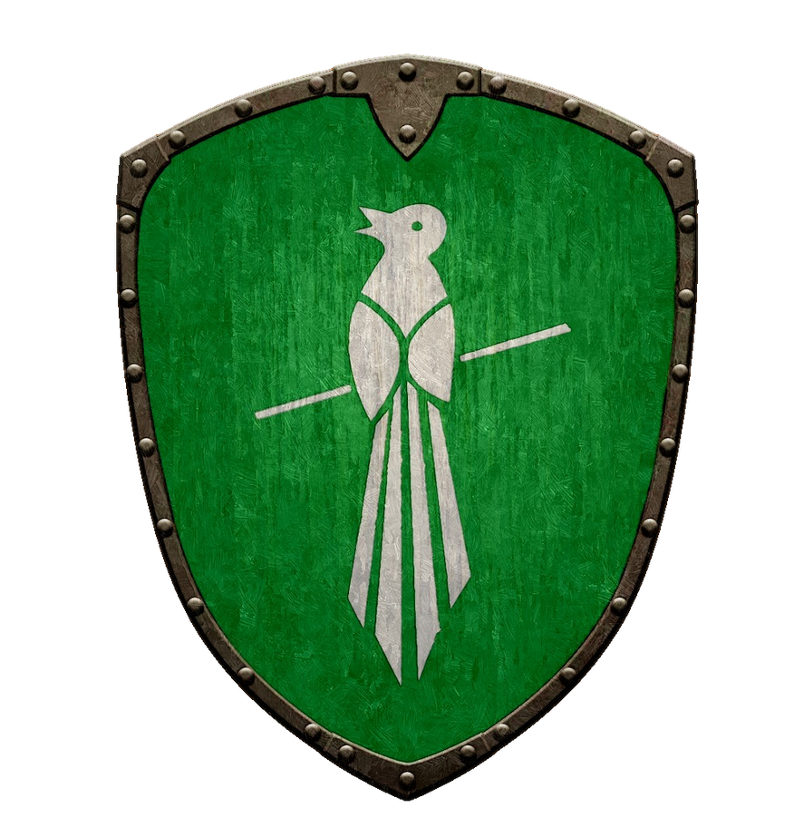
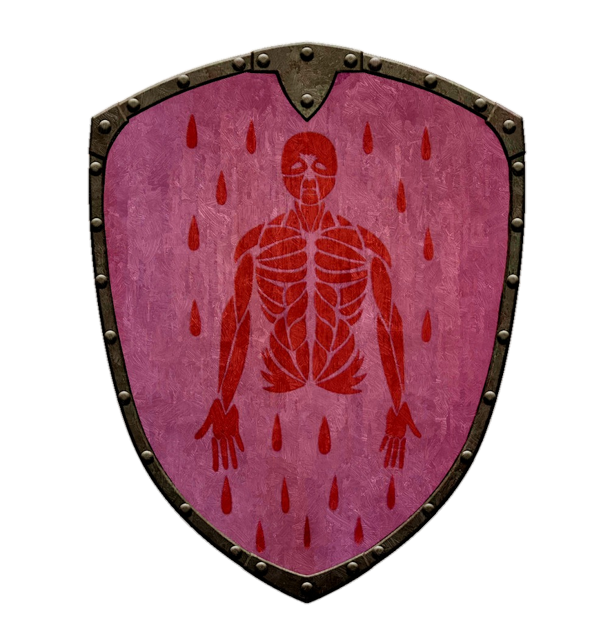
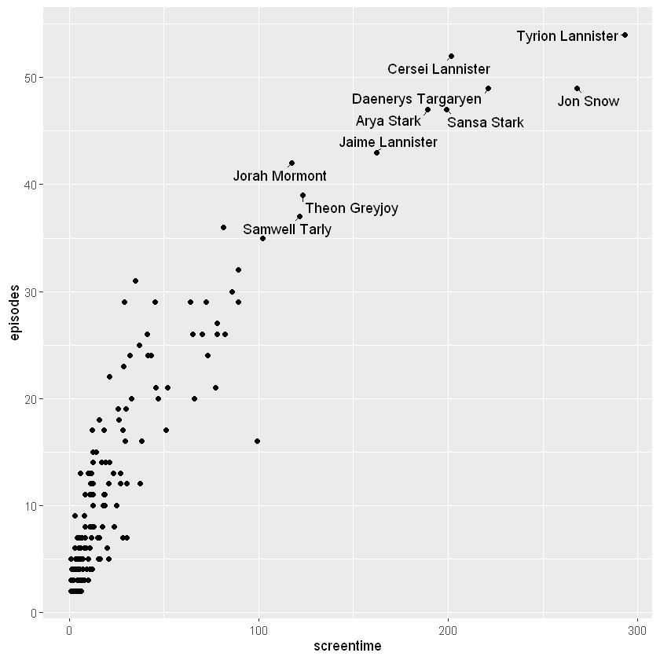

Code
library("readr")
library("ggplot2")
library("dplyr")
library("ggrepel")
screentimes <- read_csv("Data/GOT_screentimes_1.csv")
screentimes_high <- top_n(screentimes, 10, screentime)Im YAML-Header (1. Zeile, raw) definiere ich die Rahmenparameter für mein Output-File.
title: –> ist aber nicht nötig, es nimmt sonst einfach meine Überschrift 1 (#)author:date: –> entweder today oder Datum im Format DD.MM.YYYYformat: gebe ich das gewünschte Format an (html, typst, pdf etc.)
code-fold: true kann der Code ein- und ausgeklappt werdentoc: true kann ich ein Inhaltsverzeichnis erstellentoc-depth: 1 definiere ich die einzublendenden Ebenen des Inhaltsverzeichnissesnumber-sections: true erlaube ich die Nummerierung der Kapitel (wichtig bei Referenzierung)warning: false setze, kommen all die mühsamen Meldungen nicht mehrbibliography: kann ich Zitierungen einfügen, siehe Section 9siehe Quarto Dokumentation “Tools –> JupyterLab”
Um aus meinem .ipynb direkt ein Quarto (z.B. im html-Format) zu erzeugen, muss ich folgendes tun:
Im Terminal (ACHTUNG: muss im gleichen Workspace sein, siehe Research Methods –> Quarto)
quarto render “Dateiname.ipynb” rendere ich das .ipynb in ein HTML / PDF, je nachdem was ich im YAML-Header definierequartopreview erhalte ich das gleiche wie mit quarto render, aber zusätzlich ein Link –> mit diesem Link kann ich das File öffnen und Änderungen live mitverfolgenWill ich einfach nur ein Quarto-File (.qmd) erstellen, konvertiere ich mein .ipynb in ein .qmd mit quarto convert “Skript.ipynb”
Bilder können eingefügt werden (in Markdown!) mit  (siehe Quarto Dokumentation “Figures”):
[] kann ich die Bildbeschreibung einfügen (z.B. Steg ins Meer)() kommt der Dateiname (gültiger, relativer Pfad!){width=300} kann ich die Breite des Bildes bestimmen (default ist Originalgrösse des Bildes)[](Internetlink)Es gibt noch viele weitere coole Feautures, siehe Quarto Dokumentation “Figures”
(siehe Quarto Dokumentation “Figures” –> Subfigures):
::: {layout-ncol=4} –> mit ncol definiere ich die Anzahl Spalten::: {#fig-elephants layout-ncol=4}:::PS: Das sieht bei mir im Skript sehr komisch aus, ist dann aber im HTML / PDF korrekt dargestellt, siehe mit quarto preview


siehe Quarto Dokumentation “Cross Referencing”
 eingefügt{#fig-testbild} anfügen –> damit wird dem Bild der “Tag” verliehen, den ich später zum referenzieren verwenden kann.{#fig-testbild} wird gleichzeitig eine Bildlegende erzeugt (Figure 1: Testbild){} definieren will, trenne ich diese mit einem Leerschlag!Nun kann ich auf das Bild referenzieren, indem ich den entsprechenden Tag mit @ nutze –> siehe @fig-testbild
Siehe Figure 2
siehe Quarto Dokumentation “Cross Referencing” zu unterst “Sections”
## Introduction) einen Tag anfügen (z.B. {#sec-introduction})@sec-introduction for additional context.Ich mache dies für das Kapitel “Quarto rendern” –> siehe Section 3
WICHTIG: Damit die Kapitelnummerierung sichtbar wird, muss ich diese im YAML-Header einfügen!! –> number-sections: true
siehe Quarto Dokumentation “Cross Referencing” “Computations”
label und ein fig-cap hinzugefügt werden#| label: fig-plot#| fig-cap: "Plot"@fig-plot –> siehe Figure 3library("readr")
library("ggplot2")
library("dplyr")
library("ggrepel")
screentimes <- read_csv("Data/GOT_screentimes_1.csv")
screentimes_high <- top_n(screentimes, 10, screentime)ggplot(screentimes, aes(screentime, episodes)) +
geom_point() +
geom_text_repel(data = screentimes_high,aes(label = name),min.segment.length = 0)
siehe Quarto Dokumentation “Cross Referencing” “Tables” –> “Computations”
Um eine computergenerierte Tabelle zu referenzieren (und eine Caption zu setzen) verwende ich die library knitr.
#| label: tbl-top10 –> Tag für die Tabelle#| tbl-cap: "Top 10 Characters by Screentime" –> Name der Captionlibrary(knitr)kable davor –> kable(Plot)Auf die Tabelle referenzieren kann ich dann wieder mit @tbl-top10 –> siehe Table 1
top_10 <- select(screentimes_high, c(name, screentime, episodes))
library(knitr)
kable(top_10)
|name | screentime| episodes|
|:------------------|----------:|--------:|
|Tyrion Lannister | 293.30| 54|
|Jon Snow | 268.15| 49|
|Daenerys Targaryen | 221.30| 49|
|Cersei Lannister | 201.45| 52|
|Sansa Stark | 199.30| 47|
|Arya Stark | 189.15| 47|
|Jaime Lannister | 162.30| 43|
|Theon Greyjoy | 123.30| 39|
|Samwell Tarly | 121.45| 37|
|Jorah Mormont | 117.30| 42|siehe Quarto Dokumentation “Citations”
Um ein Paper zu zitieren muss ich:
bibliography.bibbibliography: bibliography.bib@article{KEY},) der .bib-Datei definiere ich, wie ich die Zitierung einhole –> ich kann diese so setzen, wie ich will. Ich habe den key auf @article{scherelis2025, gesetzt, und kann die Zitierung somit mit @scherelis2025 machen. siehe Scherelis, Laube, and Doering (2025)PS: zu unterst im File kommt die ganze Zitierung des Papers.